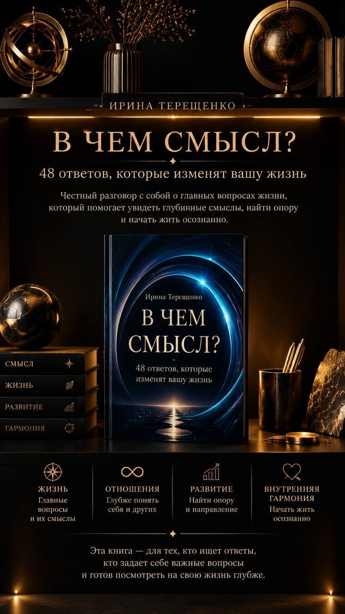
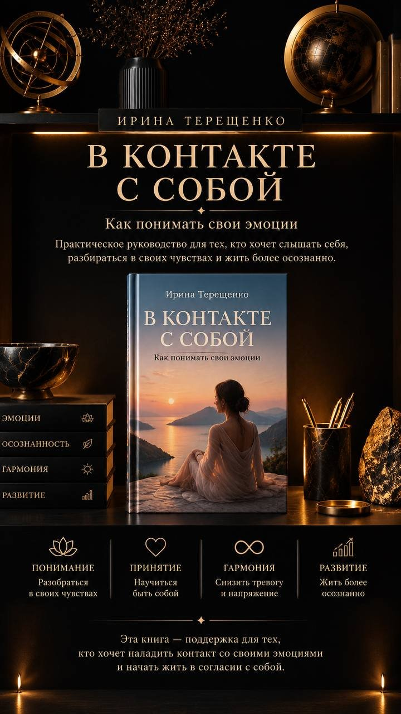
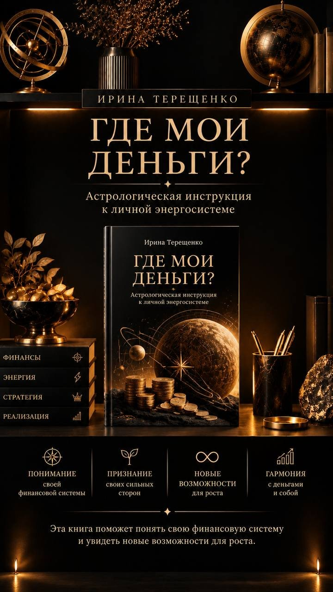
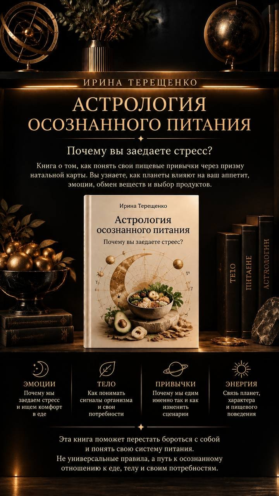
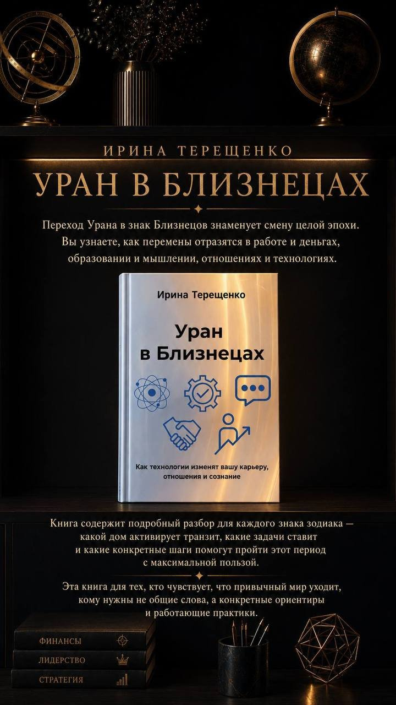

Сначала личная консультация по вашей карте: я покажу, почему с вами снова и снова повторяются одни и те же ситуации. Потом месяц курса, где вы встраиваете это знание в жизнь и выстраиваете свою ветку реальности.
Хочу на курс с консультациейНам с детства транслируют картинку «успешного успеха». Мы бежим за ней, иногда даже добегаем. А картинка оказывается чужой, и радости в ней нет.
Сегодня у людей тревога из-за полного непонимания: что происходит, где я, куда двигаться. Ум пытается всё объяснить, и чем больше он анализирует, тем меньше вы слышите себя.
В каждой натальной карте есть точка роста. Пока вы в неё не шагнули, жизнь подкидывает похожие сценарии снова и снова, чтобы вы это наконец увидели.
Есть два способа жить. Можно быть наблюдателем, который сам формирует процесс и создаёт свою ветку реальности. А можно жить в чужой ветке, где решения за вас принимают страх, чужие ожидания и старые привычки.
Сколько раз вы делали разбор, кивали «да, это про меня» и уходили с тем же, с чем пришли? Мы с командой собрали формат, в котором после понимания идёт действие.
Вы приходите со своей ситуацией. Я смотрю вашу карту своим опытом и астрологическими инструментами: почему это происходит, какие транзиты сейчас работают, какой урок вам предлагает жизнь и где ваша точка роста. Вы уходите с чёткими рекомендациями под себя. Разбор приходит голосовым сообщением, его удобно переслушать.
Месяц работы, чтобы всё, что вы о себе узнали, стало частью жизни. Пять сфер по очереди: кто я, отношения, деньги, тело, возврат к себе. В конце у вас личная практика, к которой вы возвращаетесь, когда снова начинаете теряться. Лекции выходят голосовыми в закрытом Telegram-чате, слушать можно в удобное время. Раз в неделю встречаемся в Zoom: разбираем ваши вопросы и переносим материал в вашу ситуацию, всего 4 встречи.
Сначала вы увидите, что у вас сломано. Потом поймёте, откуда поломка. И только потом начнёте менять, уже своими руками.Ирина Терещенко
Самое сложное для многих это сформулировать запрос. Когда человек начинает формулировать, ум снова подгоняет жизнь под удобную рамку. Просто опишите, что у вас происходит. Начнёте с работы, а окажется, что дело в отношениях. Или наоборот.
«Работаю много, а денег на себя не остаётся». «Боюсь потерять доход и не решаюсь на перемены». «Не понимаю, почему возможности проходят мимо».
«С мужем вроде всё нормально, но я как будто одна». «Не могу выстроить границы с мамой». «В отношениях повторяется один и тот же сценарий».
«Не понимаю, чем хочу заниматься». «Сил нет, хотя ничего не болит». «Живу на автомате и перестала слышать свои желания».
Вы начнёте видеть, что вами движет, почему вы принимаете именно такие решения и где отдаёте управление жизнью страху, чужим ожиданиям или старым сценариям.
Лучше поймёте своё тело, свои потребности и границы. По-другому посмотрите на отношения с близкими.
Заметите, как отношение к себе связано с деньгами, возможностями и тем, что вы позволяете себе получать от жизни.
Перейдёте от бесконечного анализа к вопросу: «Как я хочу прожить свою жизнь и что могу сделать для этого сейчас?»
Предприниматель и астролог с опытом больше 14 лет. Говорю на языке действий и результата: астрология для меня это точный расчёт и инструмент решений.
Сама прошла путь с нуля: тяжёлый развод, трое детей на руках, кредиты. Сегодня у меня пятеро детей, счастливый второй брак и несколько своих бизнесов.
Автор 24 книг. Эксперт-астролог на телевидении. Больше 18 лет в Сибирской ассоциации предпринимателей.
Звёзды не сделают работу за вас. Они показывают, где ваша точка роста и куда идти. Дальше мы идём вместе.Ирина Терещенко
Для консультации понадобятся дата, время и город рождения.
Четыре книги идут рядом со своими модулями, пятая о главном транзите ближайших семи лет. Читаете, когда хочется глубже, и возвращаетесь к ним после курса.

48 ответов, которые изменят вашу жизнь. Честный разговор с собой о главных вопросах: смысл, любовь, деньги, страхи, выбор своего пути.
К модулю 1 · Кто я
Как понимать свои эмоции: почему они возникают, как слышать свои чувства без осуждения и находить внутреннее равновесие.
К модулю 2 · Отношения
Астрологическая инструкция к личной энергосистеме: почему возможности проходят мимо и где ваши сильные стороны.
К модулю 3 · Деньги
Почему вы заедаете стресс и как через натальную карту понять свои пищевые привычки и систему питания.
К модулю 4 · Здоровье
Разбор для каждого знака: какой дом активирует транзит, какие задачи он ставит и какие шаги помогут пройти эти 7 лет с пользой.
Бонус · 7 лет переменДа. Карту смотрю я, а вам объясняю простым языком, что из неё следует и что делать.
Время есть в выписке из роддома или в медицинской карте. Если его нет совсем, всё равно приходите: многое видно и по дате, а точную границу я сверяю по событиям вашей жизни.
Любой специалист однажды упирается в то, что себя со стороны не видно. Взгляд другого человека на вашу карту и вашу ситуацию даёт то, чего не даёт самостоятельный разбор.
Лекции выходят голосовыми прямо в Telegram-чате, проходить их можно в любое время. Раз в неделю живая встреча в Zoom. Программа рассчитана на месяц, старт 5 октября.
Да, при оплате доступна рассрочка без переплаты.